매매 알림만 켜두면, 일지는 포핏이 씁니다 🐾
홈에서 개미일기를 누르면 처음 보이는 화면이에요. 이번 달 매매 현황과 성과를 한눈에 봅니다.
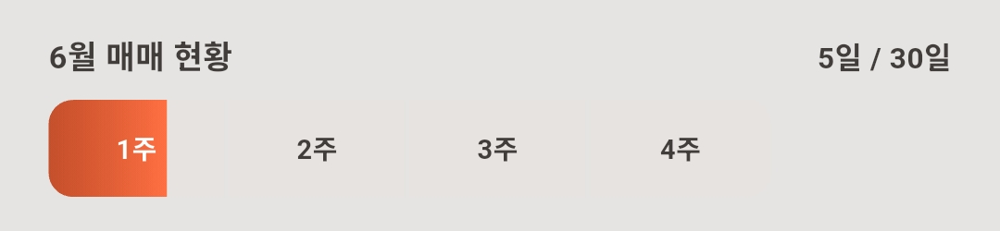
가계부와 똑같아요 — 일요일 마감으로 1주에 한 칸씩 차고, 지나간 주를 누르면 그 주 매매에 대해 포핏이 진단 한마디를 해줍니다.
이번 달 매매가 어느 시장에 몰려 있는지 네모 크기로 보여줘요.
이번 달 청산 기준으로 핵심 지표 네 가지가 나와요.
화면을 위로 스와이프하면 기간별 손익 곡선이 나와요. 1개월·3개월·6개월·1년을 골라 흐름을 볼 수 있습니다.
일지에는 보유중 · 일간 · 월간 세 화면이 있어요. 상단 탭을 누르거나 화면을 좌우로 스와이프해서 오갑니다. 모든 화면 맨 위에는 합계 수익이 나와요.
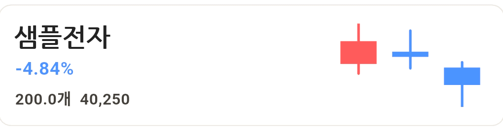
현재 보유 중인 종목이 수익률과 함께 나와요. 부분청산한 포지션도 남은 수량이 있으면 여기 있습니다.
종목을 탭하면 상세 매매내역이 떠요. 회차별 매수·매도 기록과 포지션 상태를 볼 수 있어요.
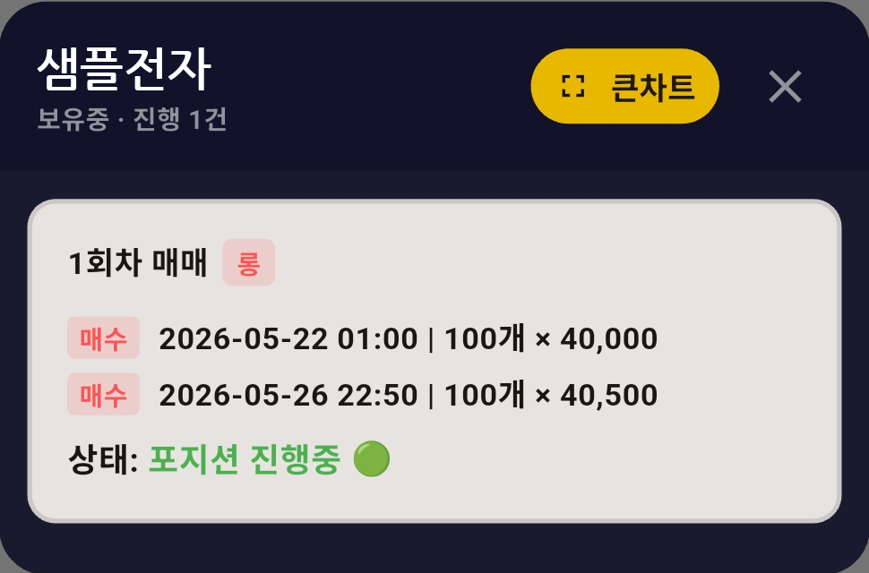
큰차트 버튼을 누르면 차트 위에 내가 매매한 지점이 표시돼요. 어디서 사고팔았는지 캔들과 함께 복기할 수 있습니다.
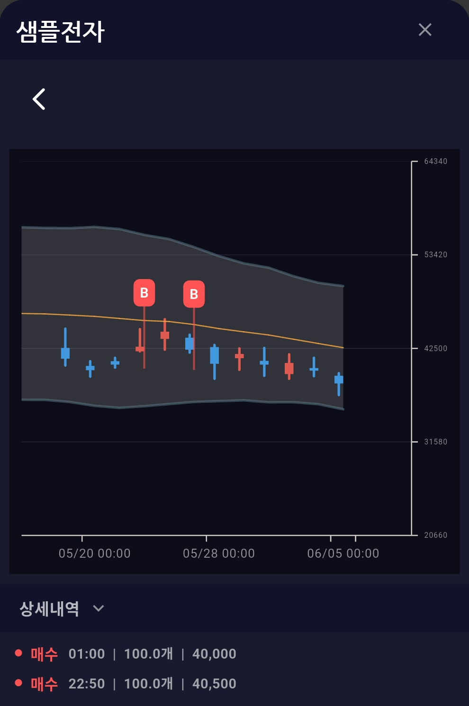
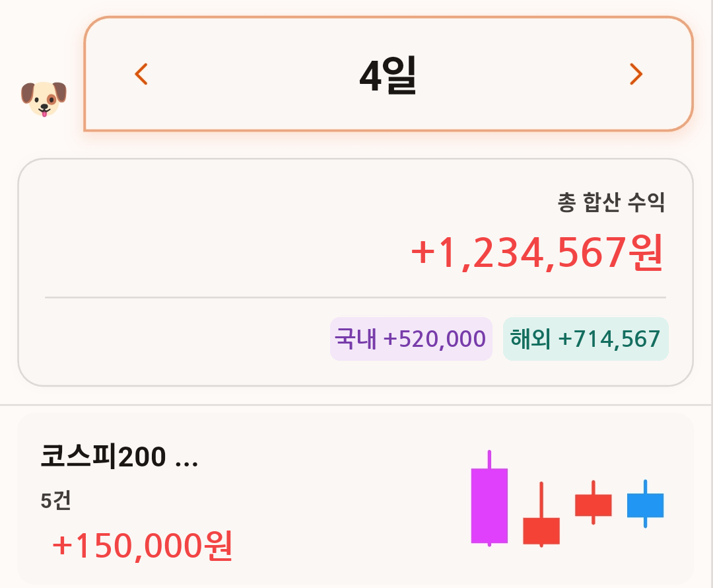
그날 청산된 매매의 수익금과 그동안의 매매 내역이 나와요. 기록 기준은 청산한 날이에요 — 예전부터 들고 있던 종목이라도 오늘 청산하면 오늘 날짜에 기록됩니다. 아직 청산 안 된 부분청산 포지션은 보유중에 남아 있어요.
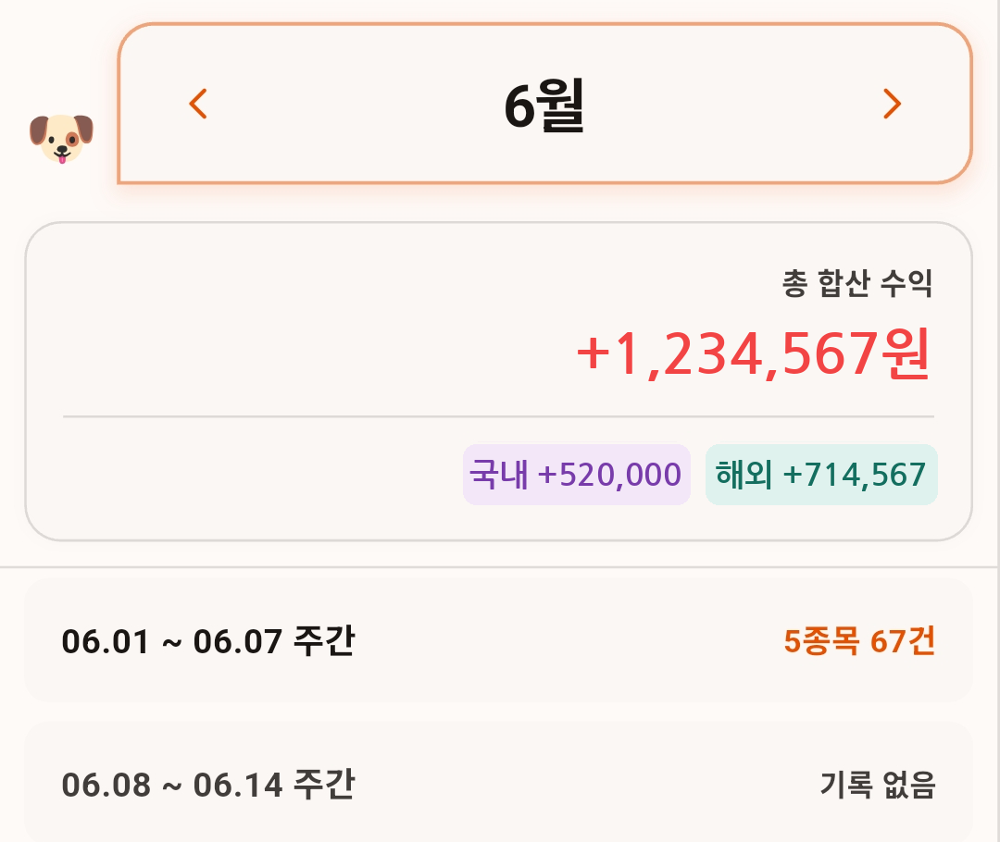
월간은 주차별로 정리돼요. 주차를 누르면 그 주에 청산한 종목들이 나오고, 종목마다 상세 내역·차트·정산 금액을 볼 수 있습니다.
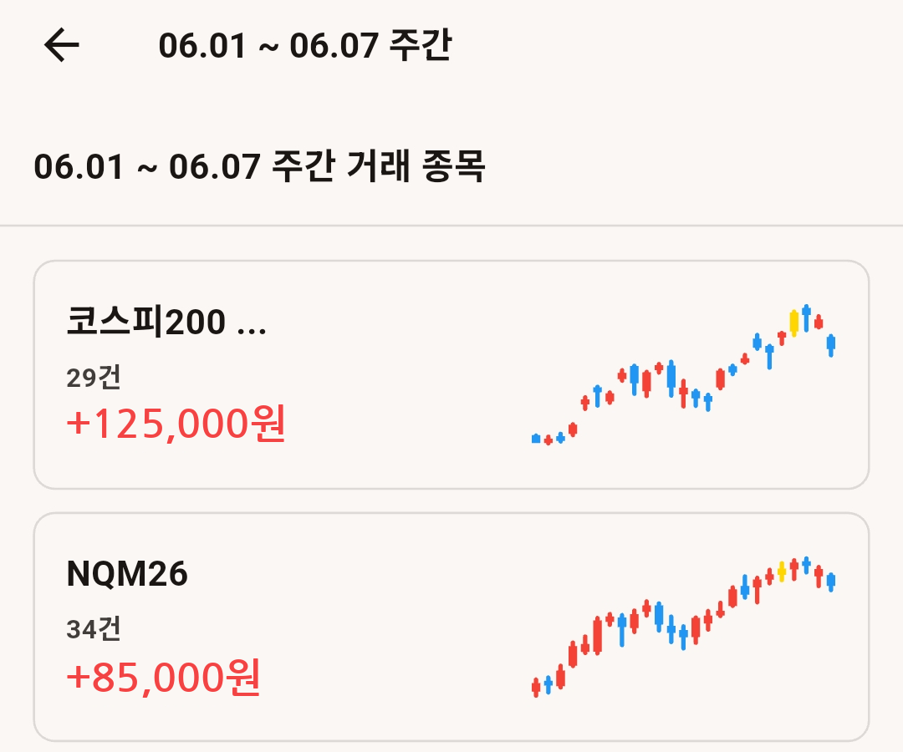
매매 결과를 블롭으로 봐요. 시각화도 보유중 · 일간 · 월간 세 화면으로 되어 있고, 더블탭으로 이동합니다.
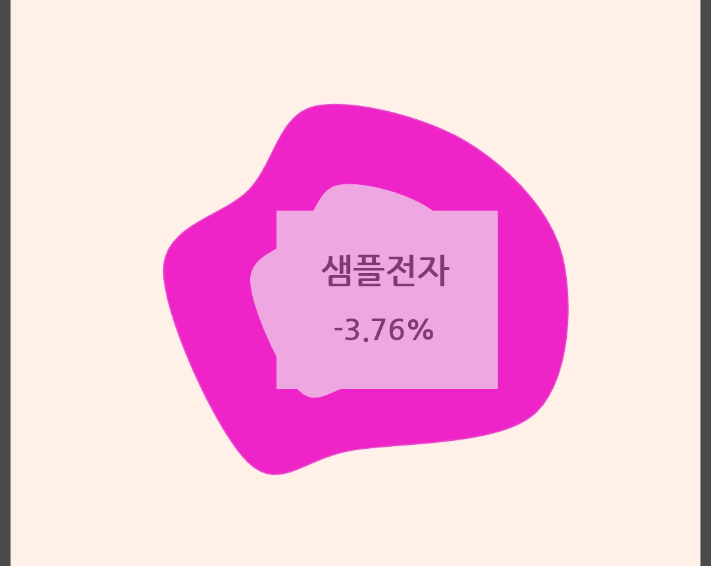
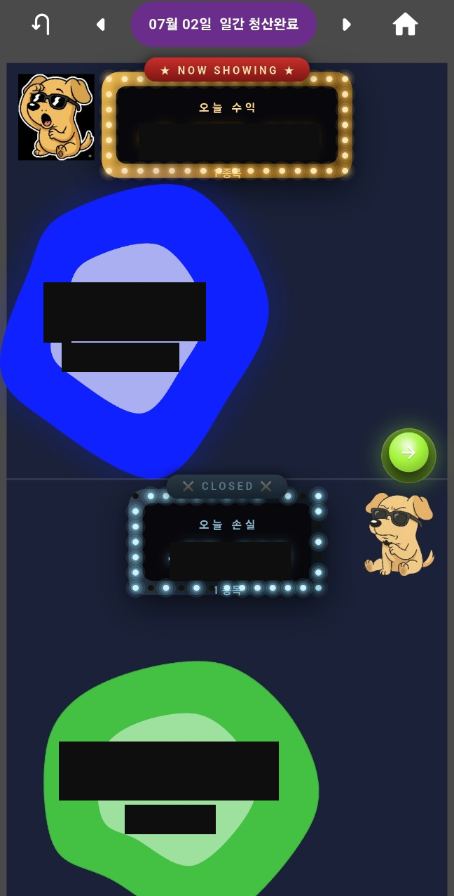
그날 청산한 매매가 두 줄로 흘러가요 — 윗줄은 수익 종목, 아랫줄은 손실 종목. 블롭을 누르면 상세 매매내역이 뜹니다.
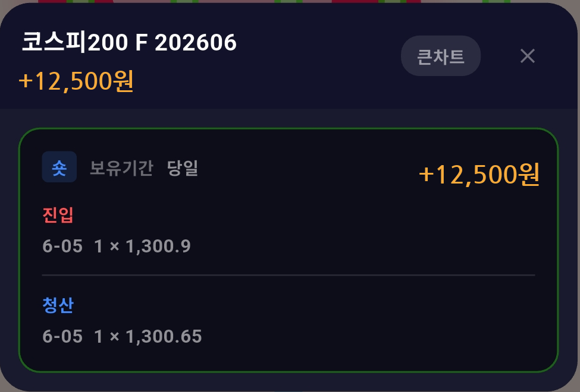
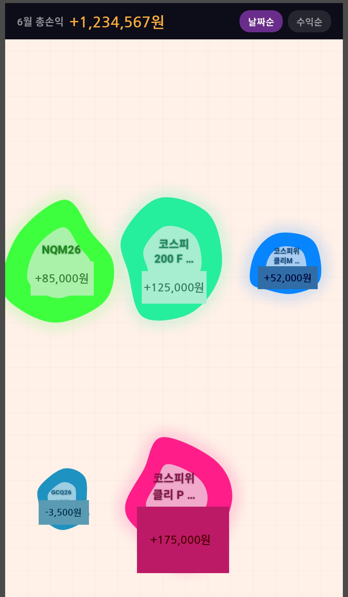
맨 위에 이번 달 총손익이 나오고, 날짜순 · 수익순 버튼으로 블롭을 줄 세울 수 있어요. 조작은 가계부 시각화와 똑같아요 — 블롭을 꾹 누른 채로 끌면 자리를 옮기고, 두 손가락으로 줌, 화면을 끌면 팬 스크롤이 됩니다.
블롭을 누르면 사이클별 매매 내역(진입·청산)이 나와요.
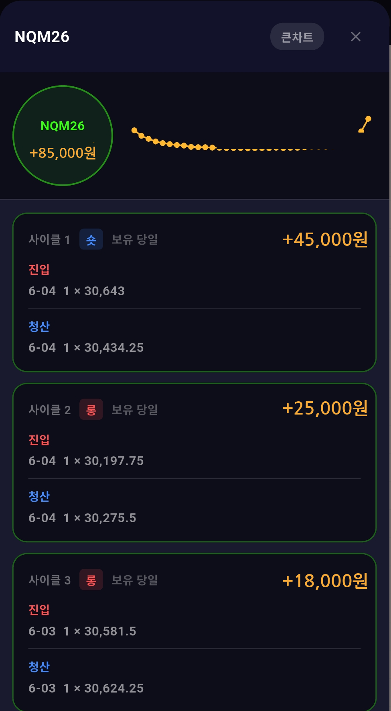
큰차트로 들어가면 차트와 매매 내역을 함께 볼 수 있고, 오른쪽 위에 👀 포핏의 시선 버튼이 있어요.
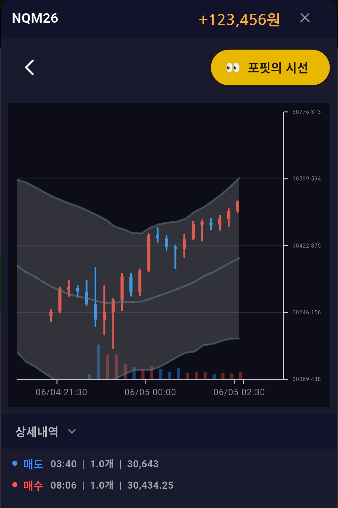
포핏의 시선이 활성화되어 있을 때 누르면, 그 매매에 대해 포핏이 한마디 해줍니다 — 잘했으면 칭찬, 아쉬우면 팩폭이에요.
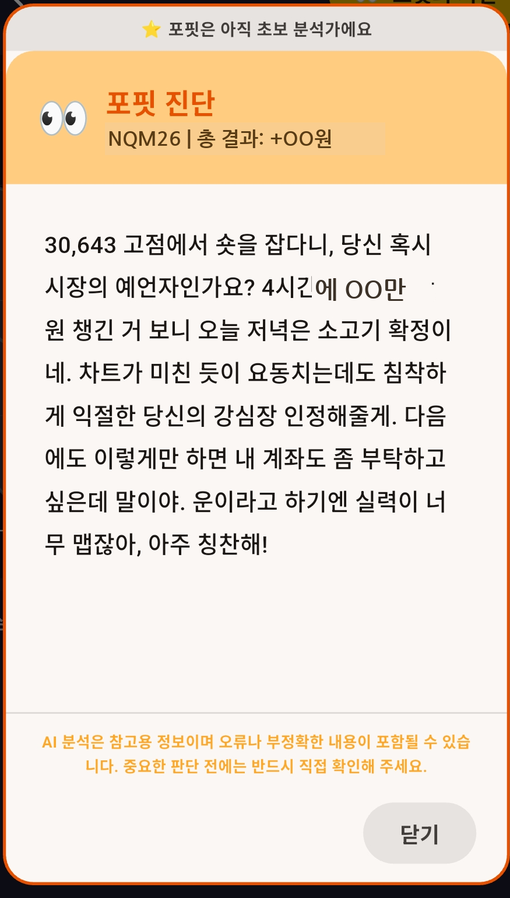